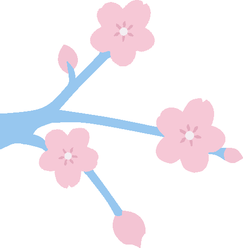

Racha Actual
0
Racha Maximo
ひらがな
あ
Tu respuesta:
Respuesta correcta:
Terminaste todas las letras!
Si abandonas ahora, las preguntas que ya respondiste bien seguirán en la lista de incorrectas.
¿Quieres repasar las que te equivocaste ahora?